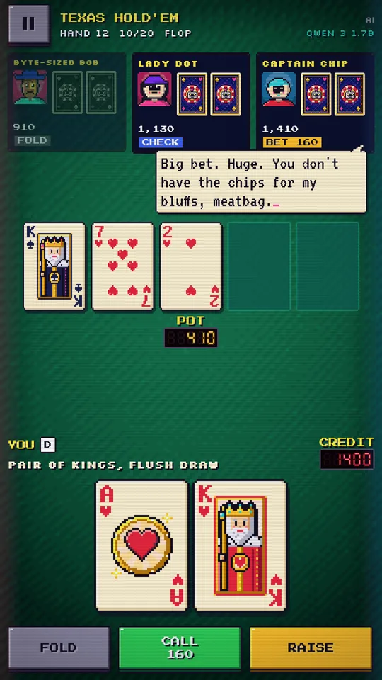
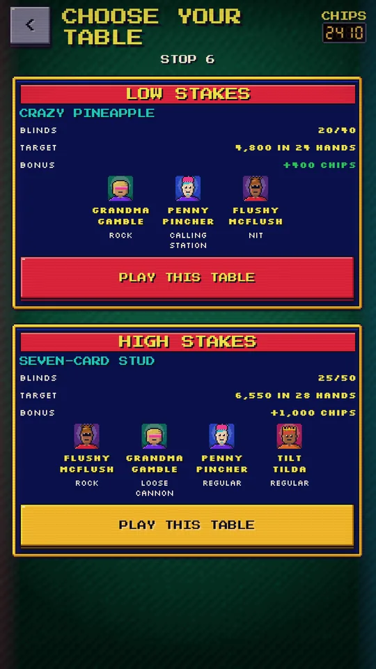
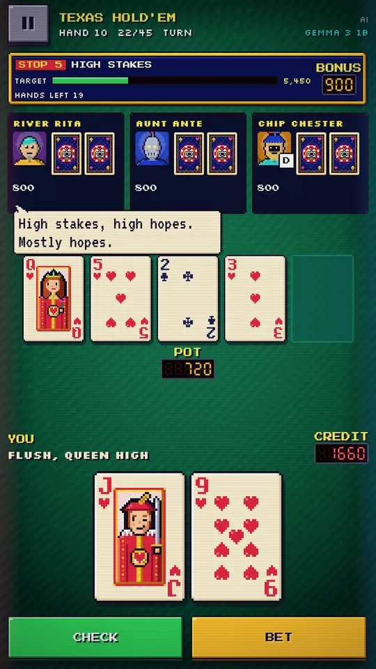
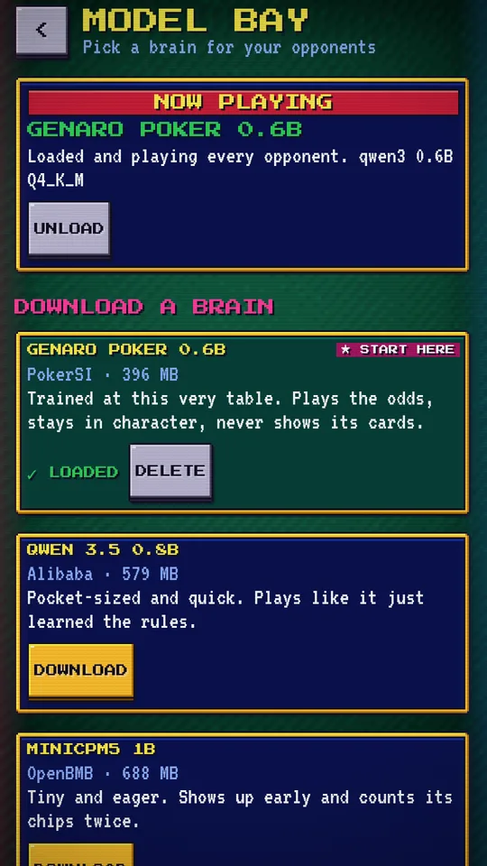
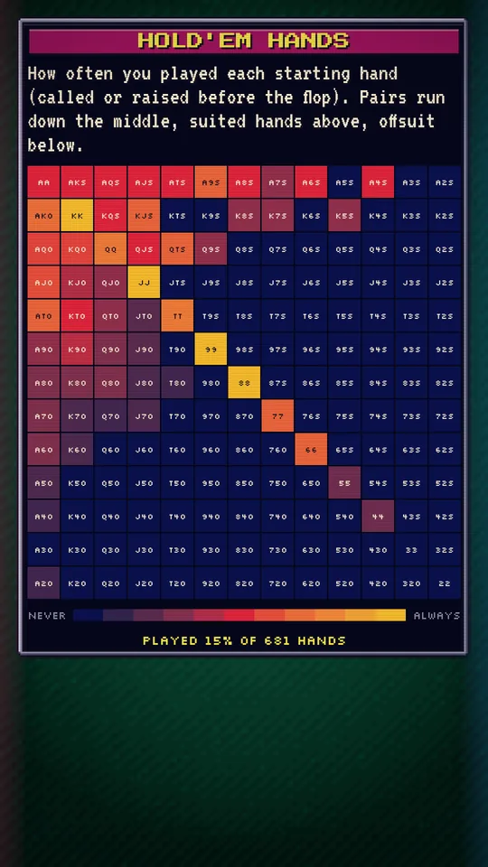
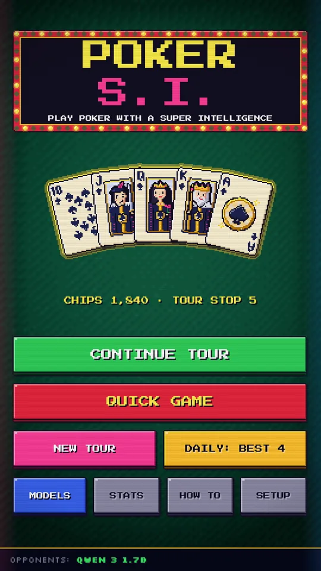
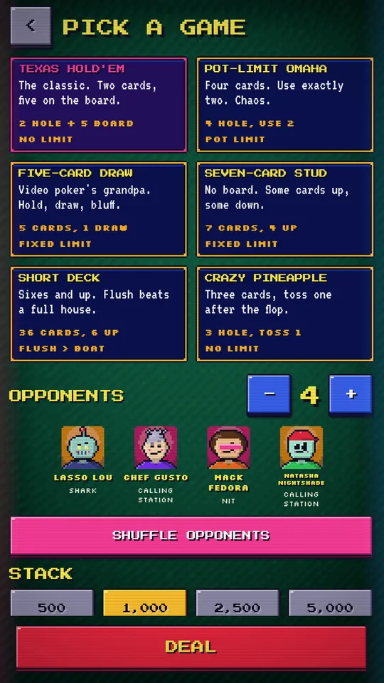
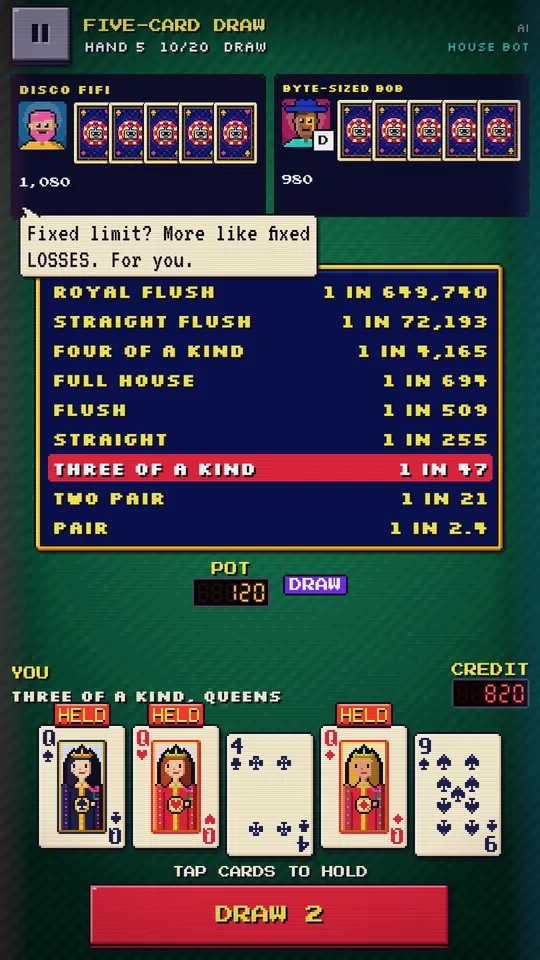
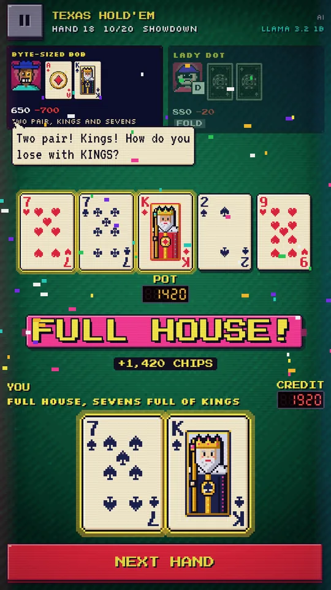
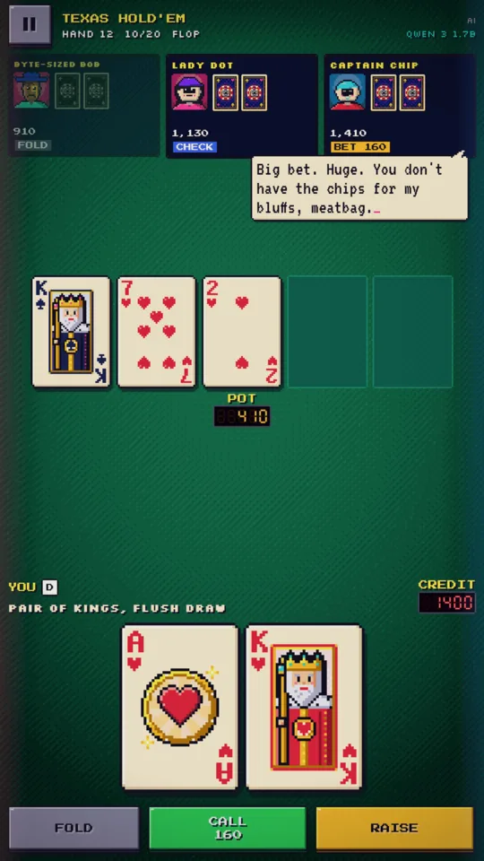

POKER S.I.
Play poker with a super intelligence
Or at least a very small one that lives on your phone. Every rival at the table is a language model running on your device: it bets, it bluffs, and if you let it, it talks trash. Texas Hold'em, Omaha, Draw, Stud and more, single player and offline.
I'm all in, meatbag.

- Six games
- Poker Tour
- AI on the phone
- Plays offline
- No ads
- No account
- Open source
What's on the table
A cabinet full of tiny AIs
Chunky 8-bit cards, lamp-lit pixel felt, CRT scanlines, marquee lights, LED pot counters, HOLD buttons and chiptune bleeps. Plus a table of quirky characters who think for themselves, right on your phone.
-
The AI plays
Each opponent is a randomly rolled persona, with a name, a pixel face and a personality, played by the model you loaded. Its move is held to legal poker, so a hand never breaks.
-
Table talk
Turn it on and the characters banter in speech bubbles, reacting to bets, the board and each other. Anyone who starts repeating themselves gets cut off.
-
House Bot
No model yet? A built-in opponent plays every seat, and it steps in whenever a model fumbles. The game never waits on a download.
-
Fair dealing
Decks are shuffled from a seed, and each opponent only sees what its seat may know: its own cards, the board, the bets.
-
Private
No account, no ads, no analytics. The only network use is downloading a model you pick, from Hugging Face.
-
Stats
Lifetime records, your best hand ever dealt out in pixel cards, and a 13×13 chart of every Hold'em starting hand you played.
-
Accessible
TalkBack reads your cards, the opponents, what they say and the pot, and announces every action at the table.
-
Debug console
For the curious: a Quake-style terminal with every prompt, the raw reply as it streams, and tokens per second. Off by default.
Pick your poison
Six games
| Texas Hold'em | Two hole cards, five community cards. |
|---|---|
| Pot-Limit Omaha | Four hole cards; use exactly two of them with three from the board. |
| Five-Card Draw | Five cards. Tap HOLD on the keepers, draw once. |
| Seven-Card Stud | Three down, four up, no board. |
| Short Deck | Sixes and up: 36 cards. A flush beats a full house, and A-6-7-8-9 is a straight. |
| Crazy Pineapple | Three hole cards, discard one after the flop, then play Hold'em. |
All-ins, side pots and split pots are handled for you, and a how-to-play screen covers every game and the hand rankings.
Roguelite mode
The Poker Tour
- Escalating tables. Hit each table's chip target within its hand limit, or bust everyone. Your chips carry over; go broke and the tour is over.
- Choose your next table. Low stakes, or high stakes with an extra opponent, bigger blinds and a bigger bonus. Plain poker, no rule twists.
- Ten stops, then endless. Clear the tenth table to win, then keep going.
- Seeded and daily tours. The daily tour deals everyone the same seed that day.
Quick games never run dry either: when an opponent goes broke, a new character sits down a hand later.




Bring your own brain
Models
- Download a curated model. A short list of small GGUF models picked to play well and fit on phones. They download in the background, straight from Hugging Face.
- Or load your own. Pick a folder and every
.ggufin it shows up. Files are read in place, never copied. Small instruction-tuned models, roughly 0.5B to 4B parameters at Q4, are the sweet spot. - Or skip it. House Bot plays every game and a whole tour without a download.
Powered by llama.cpp, which picks the fastest CPU backend for your phone at runtime. The AI wants a reasonably recent 64-bit phone with a few gigabytes of free memory and storage.
Attract mode
Screenshots

TitlePull up a chair. 
Six gamesPick one, pick your rivals. 
Five-Card DrawHOLD the keepers. 
ShowdownFull house! 
TabletThe same cabinet, bigger cards.
Deal me in
Get PokerSI
Free, for Android 13 and newer.
Download the APK
Every update to the game is published as a signed APK on GitHub. Grab pokersi.apk from the latest release and sideload it, and check it against the pokersi.apk.sha256 next to it (how).
Google Play SOON
PokerSI is in closed testing on Google Play and isn't publicly listed yet. Until it is, the APK above is the same game, built by the same CI run.
Build it yourself
It's MIT licensed. llama.cpp is a submodule, so clone recursively:
git clone --recursive \
https://github.com/bradflaugher/PokerSI.git
cd PokerSI
./gradlew assembleDebug